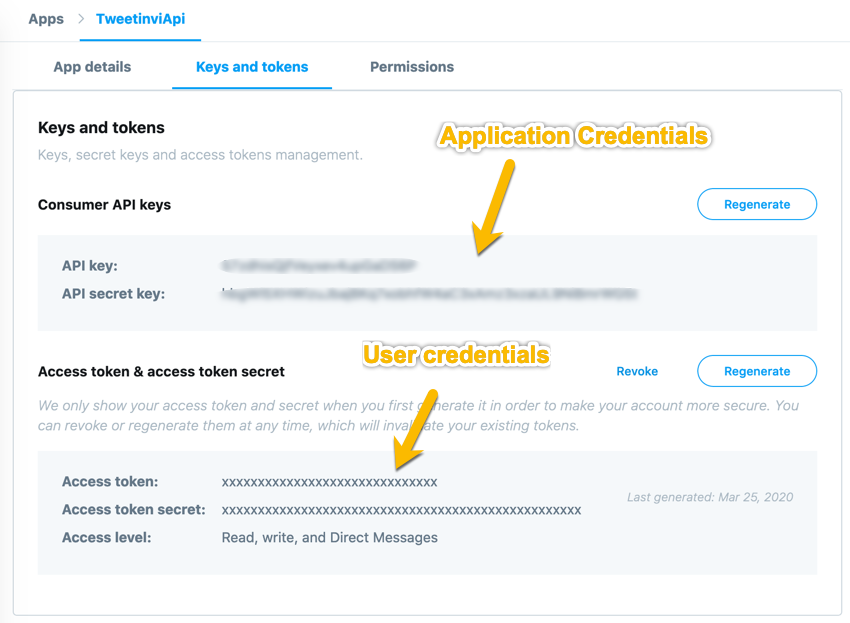

Getting Started¶
In this section we will create a simple console application that will print your username.
Pre requisites¶
Before starting you will need a Twitter app and a set of user credentials.
If you already have credentials skip this section.
Steps to create my first credentials
Create a new application on https://developer.twitter.com/en/apps/create
Select the
Keys and TokenstabClick
Generatenext to the Access token & access token secretNow you can find your application credentials as well as the additional credentials for authenticating as a user.

Create a new project¶
# create a new directory for the hello world application
mkdir tweetinvi-hello-world && cd tweetinvi-hello-world
# initialize a console project
dotnet new console
Hello Twitter World!¶
Now we just need to modify the Main function of Program.cs
static async Task Main(string[] args)
{
var userClient = new TwitterClient("CONSUMER_KEY", "CONSUMER_SECRET", "ACCESS_TOKEN", "ACCESS_TOKEN_SECRET");
}
Now lets print your username!
var user = await userClient.Users.GetAuthenticatedUserAsync();
Console.WriteLine(user);
And now lets inform the world about your great achievement!
var tweet = await userClient.Tweets.PublishTweetAsync("Hello tweetinvi world!");
Console.WriteLine("You published the tweet : " + tweet);
Congratulation you have finished this tutorial!
Source code: Program.cs
using System;
using System.Threading.Tasks;
// You need to add the tweetinvi namespace
using Tweetinvi;
namespace tweetinvi_hello_world
{
class Program
{
static async Task Main(string[] args)
{
// we create a client with your user's credentials
var userClient = new TwitterClient("CONSUMER_KEY", "CONSUMER_SECRET", "ACCESS_TOKEN", "ACCESS_TOKEN_SECRET");
// request the user's information from Twitter API
var user = await userClient.Users.GetAuthenticatedUserAsync();
Console.WriteLine("Hello " + user);
// publish a tweet
var tweet = await userClient.Tweets.PublishTweetAsync("Hello tweetinvi world!");
Console.WriteLine("You published the tweet : " + tweet);
}
}
}